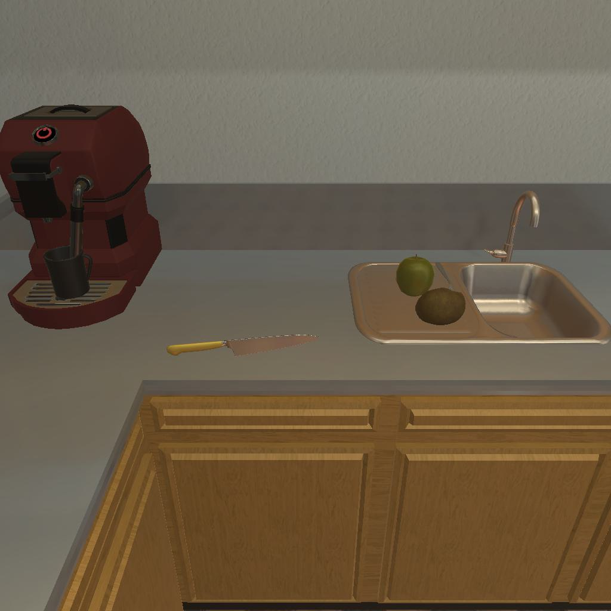

---------------------------------------------------------task: 20---------------------------------------------------------
--------------------------------------------------------------------------------------------------------------------------------------------------------------------
--------------------------------------------------------------------------------------------------------------------------------------------------------------------
Step:--------------------------------------------------------------------------16-------------------------------------------------------------------------------
----------------------------------------
VLM Prompt:
Image1:
Image2:
Image3:
**Instruction**
1. Analyze the provided images to identify all visible household objects and compare the difference between images (e.h. whether the object is opened or not and taken on hand or not), focusing on those relevant to the task description "heat some apple and put it in garbagecan."
2. Use the analysis of images and the task hint "The agent must find an object of the desired type, pick it up, go to a microwave, heat the object with the microwave, then find the correct location to place it, and put it down there. The agent does not need to use the microwave button or open the microwave to heat the object, and the agent just needs to do action that is "heat the object with the microwave"." to answer the question: what is the most reasonable action in the choices for the task description "heat some apple and put it in garbagecan"?
3. Decide and write the answer using the template: The answer is: (i): , where i is the real number. If there is no desired object in images, search every place based on **Initial Observation** to find the object. And if no one is exactly correct, choose a similar answer.
**Initial Observation**
You are in the middle of a room. Looking quickly around you, you can see cabinet (1-18), countertop (1-4), sink (1), drawer (1-7), sinkbasin (1), coffeemachine (1), microwave (1), garbagecan (1), stoveburner (1-4), toaster (1), fridge (1)
**Answer Choices**
(1): go to cabinet 1
(2): go to countertop 1
(3): go to cabinet 3
(4): go to cabinet 5
(5): go to sink 1
(6): go to cabinet 6
(7): go to drawer 1
(8): go to drawer 2
(9): go to sinkbasin 1
(10): go to cabinet 7
(11): go to cabinet 8
(12): go to coffeemachine 1
(13): go to microwave 1
(14): go to cabinet 9
(15): go to countertop 2
(16): go to cabinet 10
(17): go to drawer 3
(18): go to drawer 4
(19): go to garbagecan 1
(20): go to drawer 5
(21): go to cabinet 11
(22): go to cabinet 12
(23): go to cabinet 13
(24): go to cabinet 14
(25): go to stoveburner 1
(26): go to countertop 3
(27): go to stoveburner 2
(28): go to stoveburner 3
(29): go to stoveburner 4
(30): go to drawer 6
(31): go to cabinet 15
(32): go to cabinet 16
(33): go to cabinet 17
(34): go to cabinet 18
(35): go to toaster 1
(36): go to drawer 7
(37): go to countertop 4
(38): open cabinet 4
(39): close cabinet 4
(40): examine cabinet 4
**Answer**
Let's think step by step by following the instructions.
----------------------------------------
----------------------------------------
Original Response:
First, we analyze the images provided:
Image 1 shows a loaf of bread on the countertop and some glasses and a bowl on the shelves above.
Image 2 shows closed wooden cabinets.
Image 3 shows a coffee machine, a sink with two limes, and a knife on the countertop, as well as closed wooden cabinets.
None of the images show an apple or a microwave in use. Therefore, we must search every place based on the Initial Observation to find the apple and use the microwave.
Since the task is to "heat some apple," we need to find an apple first. There are no apples visible in the images, so we will have to look in places where apples are likely to be stored, such as cabinets or the fridge.
Given the task hint, the agent does not need to use the microwave button or open the microwave to heat the object. We can assume that the agent has the ability to heat the object with the microwave without interacting with it directly.
The most reasonable action would be to find an apple first. The apple is likely to be stored in the cabinet or the fridge. Since the fridge is not one of the answer choices, we will select a cabinet where the apple might be. Looking at the images, we can rule out the cabinets that are visible and closed, like cabinet 4.
Therefore, the most reasonable action from the choices given would be to search the remaining cabinets.
The answer is: (1): go to cabinet 1
----------------------------------------
----------------------------------------
>>> Refine Original VLM Response and Get Pure Action: go to cabinet 1
----------------------------------------
-----------------------------------------------------------------
Running time: 41.00728750228882 seconds
Total Money: 12.672259999999998
-----------------------------------------------------------------
-----------------------------------------------------------------
Text Observation:You arrive at loc 0. The cabinet 1 is closed.
-----------------------------------------------------------------
UNSUCCEED